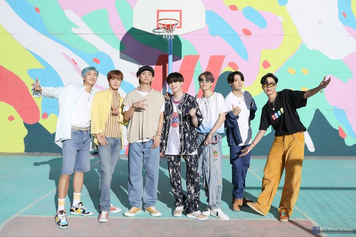

TWICE "TT" M/V
dari album Twicecoaster: Lane 1 dan #Twice Dirilis 24 Oktober 2016 Genre K-pop, electropop Durasi 3:34 Label JYP EntertainmentABOUT TWICE
BLACKPINK - 'Ice Cream (with Selena Gomez)' M/V
dari album The Album Dirilis 28 Agustus 2020 Genre Bubblegum poptrappoppop elektro Durasi 2:56ABOUT BLACKPINK

ABOUT BTS
BTS (방탄소년단) 'Dynamite' Official MV
Singel oleh BTS Dirilis 21 Agustus 2020 Genre Disko-pop[1] Durasi 3:19 Label Big HitColumbiaSony MusicABOUT BTS

Red Velvet 레드벨벳 '짐살라빔 (Zimzalabim)' MV
Singel oleh Red Velvet dari album mini The ReVe Festival: Day 1 Dirilis 19 Juni 2019 Genre EDM Durasi 3:40ABOUT RED VELVET